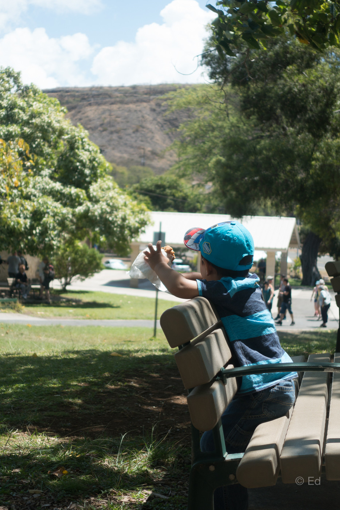

Oahu Island in Hawaii
- 여행기간 : April 2015 to May 2015
처제가 놀러 온다는 말에 산호세 안에서 한달을 보내기엔 뭔가 심심할 것 같아, 길게 어느 한 곳을 갈 생각이었습니다. 처음엔 라스베가스와 그랜드 캐년을 갈 생각이었다가 아이들이 어려서 차량으로 장시간 이동하는 것은 조금 무리인 것 같아 시애틀 + 밴쿠버로 결정했었습니다. 불행히도, 세금보고를 위해 ITIN 발급 신청을 해야 해서 아이의 여권을 IRS로 보내야 하는 상황이 되어 미국 경계를 넘는 것은 불가능하게 되어 하와이로 급선회하게 되었네요.
4박5일이라는 짧은 시간, 그리고 아이와 함께한 여행이라 하루에 많은 부분을 볼 수 없어서 섬 하나만 보기로 하고 빅아일랜드, 마우이, 오아후 중 고민하다가 오아후를 보기로 결정했습니다.
첫째날
평소에 9시 즈음에 일어나는 두 아들을 아침 일찍 7시에 깨우니 아침부터 짜증이 이만저만이 아닙니다. 아침을 든든히 먹는 둘째는 대충 먹은 빵에 심술이 났는지 공항에서 게이트로 가는 길에 드러누워 버리네요. 그래도 9시 비행기는 타야겠기에 들쳐메고 꾸역꾸역 비행기를 탑니다.
사실 한국에서 미국을 건너오면서 10시간이 넘는 비행기에 엄청 고생을 했기에 이번에도 단단히 각오하고 있었습니다. 비록 5시간 반 밖에 안되지만 태블릿에 아이들이 좋아하는 만화도 넣어두고 사탕도 준비하는 등 아이들이 최대한 짜증을 안부리도록 신경을 썼네요. 많이 커서 그런지 아니면 준비를 많이한 덕분인지 예전보다는 좀 더 수월하게 하와이에 도착할 수 있었습니다.
산호세와 하와이의 시간차 덕분에 5시간 반을 비행했는데도 여전히 11시 30분입니다. 알라모 렌트카에서 차를 예약했는데, 중급 SUV를 예약했는데 미니밴을 줍니다. '미니밴이 더 비싸서 예약을 못했는데 왠 횡재!'를 외치며 즐겁게 받아서 호텔로 갑니다.
우리가 빌린 곳은 힐튼 하와이안 빌리지 호텔입니다. 주변 사람에게 수소문 하니 이곳을 추천하더군요. 일반 방은 생각보다 저렴했는데 아이 포함 인원이 5명이라 눈물을 머금고 Junior Suite Room을 예약했습니다. 850 sqft 사이즈라 방 크기가 어마어마합니다.
발코니에서 바라보는 풍경이 기가 막힙니다. 힐튼 하와이안 빌리지의 상징이라 할 수 있는 호수와 그 너머의 요트장, 그리고 태평양이 한눈에 보이네요. 하지만, 이 방보다 반대편의 방이 전망이 더 좋습니다. 와이키키 해변과 다이아몬드 헤드가 한눈에 보이는 풍경이 훨씬 멋지더군요.
아이들을 생각해서 일정은 빡빡하게 잡지 않았습니다. 오늘은 호텔 앞 호수에서 물놀이를 하기로 합니다.
물놀이를 끝내고 근처에 있는 알라모아나 쇼핑센터로 가봅니다. 어느새 해가 뉘엇뉘엇 지고 있네요.
알라 모아나 쇼핑센터는 산호세의 평범한 몰과 별반 다르지 않네요. 여행을 오기위해 쇼핑몰을 몇번 들른 터라 그냥 무덤덤하게 구경하고 나왔습니다. 어느새 밤이 되어 잠을 청하고 (시차로 아이들이 일찍 자니 좋네요!) 내일의 여행을 기대합니다.
둘째날
꿀잠을 자는 아이들을 깨우고는 오늘의 첫번째 목적지 할로나(Halona) 블로우 홀로 출발합니다.
가는 길에 하나우마 해변을 들를까 생각했지만, 아침 댓바람부터 해변에서 아이들과 놀았다가는 일정을 제대로 못 소화할 것 같아서 그 앞에 있는 전망대에서 풍경을 감상하고 다시 출발합니다.
한국에서 신혼여행으로 정말 많이 오더군요. 그런데 독특한 것이, 신혼여행이라면 부부 한쌍이 여행을 다닐 줄 알았는데 한 리무진에서 세쌍의 신혼부부가 내려서 구경을 하고 다음 목적지로 가더군요. 아내에게 이상하다며 물어보니 신혼여행 패키지가 보통 여러 부부를 모아서 가이드 관광을 한다고 하네요.
가이드가 있으니 편하겠다.. 싶기도 하면서 다른 부부와 같이 다니는게 좋지만은 않겠구나.. 라는 생각도 듭니다. 그러면서 우리의 신혼여행인 뉴질랜드가 떠오릅니다. 그때는 멋 모르고 결혼식의 피로도 제대로 고려하지 않고 캠핑카로 이주동안 뉴질랜드를 떠돌았었네요. 지금 다시 신혼여행으로 그렇게 가라고 하면 정말 고민되겠지만 그 때 당시에는 지금의 신혼부부들과는 다르게 부시시한 모습으로 캠핑카에서 일어나 바로 차를 몰고 정처없이 운전하며 다녔던 과정이 정말 즐거웠습니다.
할로나 블로우 홀은 정말 신기한 모습이었습니다. 절벽에 난 조그만 구멍으로 파도가 치면서 위로 솟아오른다는 원리는 알겠는데, 그러면 물이 나와야 될 것 같은데 하얀 연기같이 뿜어져나오는 파도는 볼 수록 신기합니다. 잔잔한 바다일 때에는 보기가 쉽지 않다고 하니 우리 가족은 운이 좋았나봅니다. 매 파도마다 뿜어져나오는 물줄기를 볼 수 있었네요.
한참을 구경 후, 다음 목적지로 향했습니다. 주차 후 30분 정도 걸어야 한다고 아침에 말을 들어서 그냥 가볍게 걷는 걸로 생각하고 "오케이"를 외쳤는데, 이번 여행의 하이라이트가 될 줄은 꿈에도 생각 못했었네요.
주차를 하고나서 보니, 가야할 길이 평지가 아니라 경사진 길로 주욱 올라가는 길입니다. 아내가 "약간" 경사가 있을거라고 하긴 했지만, 비포장 + 경사길을 유모차를 끌고 올라가는 건 생각보다 힘든 일입니다. 두 아이가 유모차에 타고 그 유모차를 밀고 자갈 길을 올라가니 진이 다 빠질 지경입니다. 산악행군을 하듯이 땀이 비오듯 쏟아지네요. 안그래도 후덥지근한 하와이 날씨에 땀까지 쏟아지니, 이건 여행을 온건지 극기 훈련을 하러 온건지 헷갈리기 시작합니다.
그래도 이왕에 온거 끝까지 가보자고 있는 힘을 다해 올라갑니다. 한참을 올라가도 바다는 보이지 않고 경사길만 계속 되서 언제쯤 바다가 나오나 했는데, 코너를 돈 순간 멋진 바다 풍경이 펼쳐집니다.
하지만 이제 겨우 반밖에 안왔습니다. -_-.. 끝도없이 계속 정신을 잃고 무의식 중에 유모차를 끌고 올라가길 한시간 정도 ? 드디어 등대에 도착합니다.
갑자기 펼쳐지는 엄청난 풍경에 모두 할 말을 잃고 바라만 봅니다. Rabbit Island와 정말 진한 파란색의 태평양 바다가 눈앞에 나타나는데 위 사진으로 한쪽 벽을 가득 채운다면 그 느낌이 날 지도 모르겠네요.
이쪽 저쪽을 보면서 한참을 시간을 보냅니다. 아이들도 신이 났는지 여기저기 마구 돌아다녀서 쫓아다니느라 제대로 구경을 못하긴 했지만 사진으로나마 멋진 모습이 남아있네요.
내려오는 길은 아주 편하게 내려옵니다. 올라갈 땐 쉬지않는 오르막길이어서 내려가는 길은 유모차 무게로 알아서 내려갑니다.
한 숨 돌리고 다시 출발 하는데, 코너를 돌고 나니, 쌩고생해서 올라가서 보았던 그 멋진 풍경이, 그대로 보입니다. -_-. 낮은 위치라 느낌은 조금 다르긴 하지만, 구지 왜 올라갔나.. 싶을 정도네요. 그치만 조금 더 멋진 풍경을 봤다는 걸로 애써 위안삼아 봅니다. ;;
오후에는 프리미엄 아울렛에서 쇼핑이 예정되어 있어서 H3 고속도로를 타고 서쪽으로 넘어갑니다.
터널 들어가기 전 풍경이 참 멋집니다. 정차할 곳이 없어서 가는 길에 찍었는데, 그 모습이 다 들어오지 않네요.
셋째날
느긋한 여행이라 둘째날에도 가볍게 한두곳 둘러보고, 셋째날에도 역시 두곳 정도 둘러보기로 합니다.
오늘의 첫 목적지는 Dole Plantation입니다. 파인애플 Dole 아시죠? 그 농장입니다. 물론 지금은 다른 큰 농장에서 Dole 파인애플이 재배되지만, 처음 시작이 이곳 오아후 섬의 Dole Plantation이었다고 하네요.
이곳은 미로로 유명합니다. 매우 큰 미로가 있어서 길찾기 도전을 해볼 수 있는데, 걷는 걸 싫어하는 우리 두 아이들 덕분에 미로는 건너뛰고 정원 구경과 기차를 타기로 합니다.
기차를 타면 파인애플을 아주 가까이서 볼 수있을 줄 알았는데, 그저 저 ~~~ 멀리 재배되는 파인애플 나무를 언뜻 보고 넘어가는게 전붑니다. 그냥 푸른 밭만 계속 보다가 끝나는 허무한 관람이었네요. 차라리 정원 코앞에 있는 파인애플을 보는게 더 나을 정돕니다.
아이들도 시큰둥하고 , 그냥 그래서 파인애플 아이스크림으로 기분 전환을 해 봅니다.
정원은 좋긴 좋은데..... 좁아요. 한 3분이면 다 볼 만한 정원 크기라 "아메리칸 사이즈" 를 기대했던 저에겐 꽤 실망이었습니다. 다만 아이들이 연못에서 잉어와 노느라 시간가는 줄 모르고 잘 놀아서 다행이었습니다. 아니면 돌 플랜테이션은 실망만 가득히 기억에 남았을 것 같네요.
아이들이 있는 여행객이 아니라면 돌 플랜테이션은 비추!
다음 목적지는 할레이바(Haleiwa) 올드 타운입니다. 올드 타운하면 먼저 생각나는 곳이 [뉴질랜드의 애로우 타운][애로우타운]입니다. 좀 꾸며진 느낌이 나긴 했지만 그래도 아기자기 이쁜 마을이었던 기억이 납니다.
그런 느낌을 기대하고, 돌아다닐 맛이 나겠구나~ 생각하고 갔는데,
왠걸.. 오늘 여행은 대 실패인가 봅니다.
그저 길 하나 있고 양쪽에 가게만 잔뜩, 별다르게 볼 것도 없는 마을이네요. Honos 새우 트럭에서 점심 먹고 다른 데 보려고 해도 볼 게 없네요. 건물도 멋지지도 않고, 그렇다고 이런 저런 즐길 거리가 있는 것도 아니라, 시간을 보내려 해도 보낼 건덕지가 없습니다.
원래는 이곳에서 많은 시간을 보내야 했는데, 그러지 못해서 갑자기 오후시간이 붕 떠버렸네요. 일단은 호텔로 가기로 하고 가는 도중에 거북이 해변 잠깐 들렀다가 갑니다.
호텔에 도착해서 호텔 앞 Lagoon과 바다에서 물놀이를 합니다.
오늘 저녁은 금요일 저녁이라 호텔에서 매 주 하는 불꽃놀이가 있는 날입니다. 이걸 모르고 예약 했었는데 프론트에서 알려줘서 알게 되었죠.
큰 기대는 하지 않았어요. 뭐 호텔 불꽃놀이가 얼마나 크겠냐는 생각도 있었고, 대신에 가까이서 보긴 하겠구나.. 하는 생각도 있었죠.
그런데 왠걸, 10여분 동안 정말 쉴새 없이 폭죽을 터트리는데, 그 물량공세에 기절할 정도였어요.
호텔 앞 바닷가에 앉아서 관람을 하는데, 바로 그 앞에서 폭죽을 쏘아 올립니다. 그러니까 이전에 불꽃놀이를 볼 때는 보통 멀리서 봐서 고개를 그냥 정면을 향해서 있다가 보게 되는 경우가 보통인데, 이 불꽃놀이를 보려면 위를 한참을 올려봐야 합니다.
눈 앞을 가득 메우는 불꽃놀이 광경은 처음이라, 보고 있는 것만으로 즐겁더군요.
다만, 꼭 힐튼 하와이안 빌리지에 머물지 않아도 관람이 가능하니 구지 비싼 돈 주고 여기에 머물 필요는 없을 것 같네요.
넷째날
오늘은 어제 졸면서 지나친 오아후 북쪽 해안을 가보기로 합니다. 먼저 북쪽 해안 가기 전, 진주만을 방문합니다.
들어가기 전 가방을 들고오는 바람에 다시 차에 가방을 두고 오느라 시간이 많이 지체되었네요. 내부에 들어갈 때에는 검사를 꽤 철저하게 합니다. 마치 예전 엠파이어 스테이트 빌딩을 방문할 때와 비슷하네요. 뭔가 대단한 것이 있는 것 같지만, 배를 타고 가라앉은 전함을 보는 것 외에는 그다지 볼 거리가 많지는 않았습니다.
아무래도 역사에 남을 상징적인 곳이라서 그런지 사람들도 많았는데, 글쎄요.. 제 입장에서는 그냥 그런 전쟁 기념관일뿐이었네요.
오늘 오후는 어제 다들 자느라 못 본 북쪽 해안을 가보기로 합니다. 최종 목적지는 Laie Point로 아치모양의 바위가 있는 곳인데 가는 길에 멋진 해변이 나와서 놀면서 시간을 보냅니다.
독특한 모양의 바위가 바다에 솟아있어서 멀리서부터 보이는 데, 바위 보려고 멈췄다가 멋진 풍경에 시간 가는 줄 모르고 아이들과 놀았네요. 물놀이를 즐기기에 더할 나위없이 좋은 해변인것 같네요.
바지까지 흠뻑 젖을 정도로 논 후 목적지인 Laie Point로 갑니다. 가족이 잠들기 시작한 곳이더군요. 여기는 용얌이 흘러내리다 바다와 만나는 지점에서 굳어서 절벽으로 되어있는 곳인데, 사람도 거의 없고 파도는 아주 강렬하게 치고, 아치모양의 멋진 바위가 배경이 되는 곳이었습니다.
오아후 섬을 들르시는 분이라면 꼭 한번 가보라고 적극 추천하고 싶은 장소였네요. 강렬한 풍경은 정말 생생해서 희미한 기억에 있던 뉴질랜드의 풍경을 넘어설 정도였습니다. 다만 뉴질랜드의 기억은 오래되서 실제로는 아마도 뉴질랜드 풍경이 더 멋졌을 지도 모르겠지만요 . ^^
다섯째날
오늘은 하와이 여행을 끝내고 다시 산호세로 돌아가는 날입니다. 비행기가 점심때 출발이라 그동안 못가본 Diamond Head를 가보기로 합니다.
가는 길은 멀지 않았는데, 문제는 주차였습니다. 협소한 주차공간 덕분에 입구에서 유턴을 강제로 시키는 터라 계속 몇바퀴를 뱅글뱅글 돌았는지 모르겠네요. 늦게 도착한 차가 먼저 추차하게되는 어이없는 상황도 계속 되서 불만이 이만저만이 아니였습니다.
그렇게 어렵사리 주차한 다이아몬드 헤드는 등산을 하지 않을 거면 아무 것도 할 수 없는 공간이었습니다. 분화구 절벽을 올라가서 풍경을 봐야 하더군요.
아이들을 데리고 다녀오기엔 체력도 안되고, 시간도 안되서 결국 분화구 안에서 놀다가 가기로 합니다.

그렇게 우리 가족의 오아후 여행은 끝이 납니다. 5일이라는 짧지 않은 시간임에도 아직 보지 못한 것이 많았습니다. 여러 섬 중 오아후 하나도 제대로 못 본 터라, 다음에 와도 또 볼거리가 넘쳐날 것 같네요.